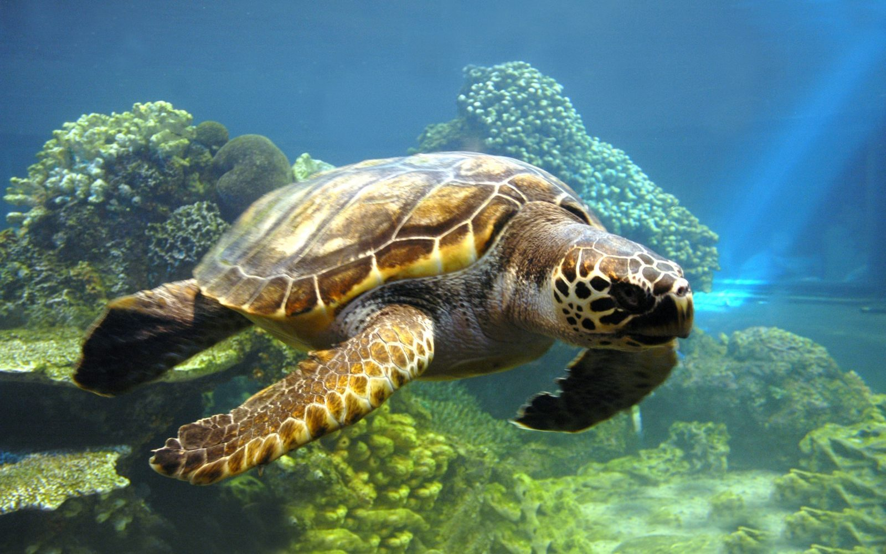
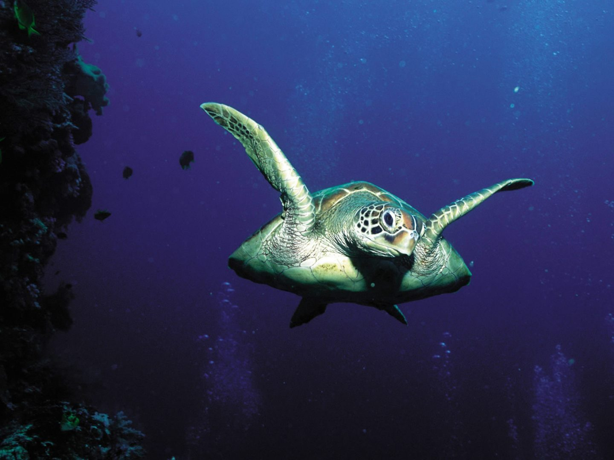

En el pasado 10 años, guardas de Paso Pacífico han protegido más de 50,000 huevos de tortuga. Estos incluyen carey en peligro crítico y la tortuga laúd. A través de este programa, también ofrecemos la vuelta al reloj de la protección a la playa de anidación más importante de Nicaragua para la tortuga verde.

First slide label
Some representative placeholder content for the first slide.

Second slide label
Some representative placeholder content for the second slide.

Third slide label
Some representative placeholder content for the third slide.